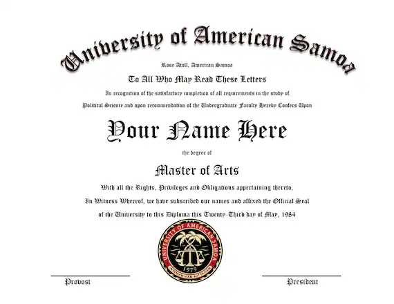

About
Education
I am Saul Goodman, and my legal education is a testament to my resourcefulness and determination. Unlike the typical Ivy League lawyer, I proudly graduated from the University of American Samoa (UAS) School of Law, where I honed my skills in unconventional ways. Some may scoff at my alma mater, but let me tell you, I am a master of the law, and my success speaks for itself. My time at UAS taught me to think on my feet, navigate complex legal situations, and advocate fiercely for my clients. So, while others may boast fancy degrees, I am proud of where I come from and what I've achieved through hard work and street smarts.
My Certificate
Experiences
I have a long and great experiences with worst and most dangerous
criminals, and I helped them to countinue their bussiness with out
getting into problems.
In short, I can legilize worst crimes for you, you do not have to
worry.
My Cases
- The "Heisenberg" Case
- The Embezzlement Case
- The Kettleman Case
- The Sandpiper Crossing Case
- The Mesa Verde Bank Case
- The Fring Case
- The "Better Call Saul" Ad Campaigns
- The "Gene" Testimony